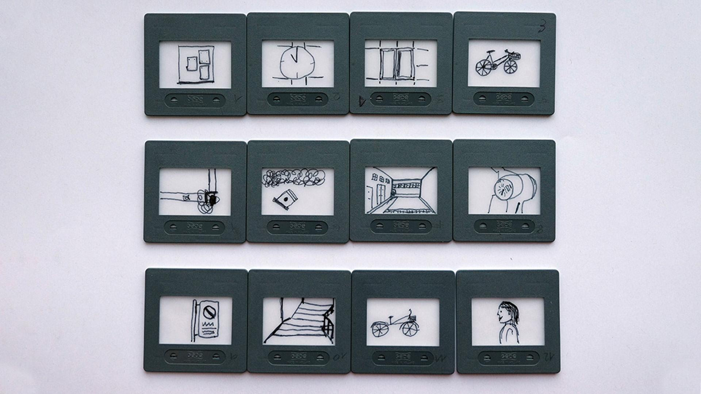

Experimentelles Erzählen
Am ersten Unterrichtstag versuchten wir uns nach einer ausgefallenen Vorstellungsrunde zuerst einmal an dieses Fach heranzutasten. So richtig etwas darunter vorstellen konnten sich nämlich die wenigsten.
Die Diashow
Es wurde uns die folgene Aufgabe erteilt: Wir sollen uns in Gruppen aufteilen und jeweils eine Person mit verbundenen Augen an verschiedene Orte führen. Am jeweiligen Ort angekommen, musste die Person die Augen öffnen und auf ein Dia zeichnen, was er oder sie sah. Abwechslungsweise setzten wir diesen Teil der Aufgabe um. Die einzelnen Sujets, die sich aus dieser Methodik ergeben hatten, sollten wir nun miteinander kombinieren und so eine Geschichte daraus bilden.
Wir schrieben also eine Story dazu und präsentierten diese am Schluss den anderem Klassenmitgliedern. Zwei andere Gruppen erstellten jeweils auch eine Geschichte zu den eigenen Dias und präsentierten diese dann anschliessend. Es war lustig und interessant zugleich, wie unterschiedlich die Sujets zum Teil interpretiert wurden.
Nun machte das Ganze schon etwas mehr Sinn. Kurz gesagt, sollten wir also lernen, auf eine kreative Art und weise etwas zu erzählen.
Verästelungsgeschichten
Wir haben verschiedenen Beispiele zu diesem Thema angeschaut und uns Gedanken dazu gemacht, wie man eine solche Verästelung sonst noch einsetzen könnte.
Auf das nächste Mal sollten wir uns überlegen, was wir selbst gerne als Experimentelle Erzählung umsetzen würden.
Erfinde ein Minigame
Wir wurden in Gruppen aufgeteilt. Jede Gruppe erhielt ein paar skurrile Zeitungsartikel. Man sollte sich für einen Artikel entscheiden und aus diesem dann die Idee für ein Minigame schöpfen.
Wir hatten uns für eine Geschichte entschieden, bei der gefrässige Ratten das Geld in einem Bankomaten auffrassen.
Dieses funktioniert wie folgt:
Regeln
Durch Würfeln kommt man voran und es gibt verschiedene Felder:
Dramaturgie
Verschiedene Erzählformen
- Exposition
- Wendepunkt (Plotpoint)
- Konflikt (Gegenspieler: z.B. innerer Konflikt {Hauptfigur selbst}, Natur oder Umfeld)
- Auflösung (Schluss)
Epische Geschichte
- Erzählerisch, erzählend, berichtend
- Auch mit Episoden verbunden
- Protagonist kann auch sterben, Geschichte geht aber trotzdem weiter
Ensembel Geschichte
- Who done it (z.B. Krimi)
- Schritt für Schritt eine Enthüllung der Geschichte
Heldenfigur erfinden
Die Aufgabe lautete: Erfinde eine Heldenfigur und beschreibe die Eigenschaften: Name, Alter, Geschlecht, Lebenslauf, Umfeld, Gegenspieler, Freunde, evtl. Tier, Schwachstellen, Gwohnheiten und Macke.
Nachdem das jede Gruppe umgesetzt hatte, wurde der Steckbrief sowie auch die Zeichnung der Figur weitergegeben und man musste das zeichnen oder schreiben was man daraus lesen konnte. Es war erstaunlich, wie viele unterschiedliche Ergebnisse daraus entstanden sind.
Storyboard
Definition Storyboard:
Skizzierung einzelner Szenen für einen Film
Beispiele von Storyboards: z.B. Höhenfeuer, Wallace & Gromit, Chicken run usw.
Es gibt verschiedene Möglichkeiten eine Szene abzubilden:
Entweder die Kamera bewegt sich oder der Protagonist. Dementsprechend verändert sich der Bildausschnitt. Mit Pfeilen kann man gut eine Bewegung oder eine Kameraeinstellung andeuten. Spielt die Kamera eine wichtige Rolle, muss diese am Rande der Szene im richtigen Winkel eingezeichnet werden.